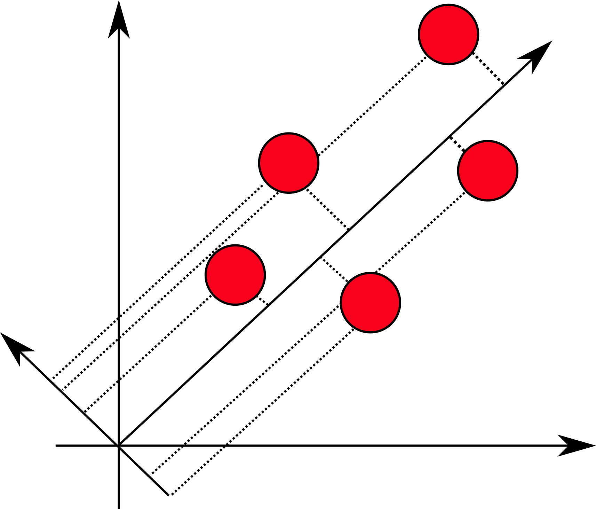

Basics of Principal Component Analysis (PCA)
When the number of features is too large, and some features do not introduce much
information and so the dimension of the dataset may be reduced using Principal Component
Analysis approach. Consider we are given a vector of observations, whereas each
contains N features. In the PCA the first step is to subtract the mean from each
feature as follows:
Y=X-\bar{X}
Now, all the datapoints are centered around zero, that is the mean of the features is zero. Consider the following case:

For simplicity, assume that we have 2-dimensional data. And consider that we have projected the datapoints on
some vector u. The idea behind the PCA is to choose such vector u that maximizes the variance of
the projections. Thus, we can write this fact mathematically as follows:
Var\ =\ \frac{1}{N}\sum{({ux}_i-u\bar{X}}){(ux_i-u\bar{X})}^T=u[\frac{1}{N}\sum{(y_i}){(y_i)}^T]u^T=uCu^T
Observe that the term under the sum is just a covariance matrix of Y
(it can be easily shown that it is indeed so by expanding the multiplication of vector by itself).
Since the task is to maximize the variance and given that the magnitude of vector u should be bounded
(otherwise the optimization will lead to infinitely large vector u) we say that uu^T=1
We can construct the Lagrangian and formulate the primal optimization problem (given the constraint):
L=uCu^T-\alpha(uu^T-1)
Taking the derivative of this expression with respect to vector u (matrix and vector derivatives are
described here) and equating it to zero we get:
Cu^T=\alpha u^T
But this is exactly the expression for the eigenvalues and eigenvectors. That is to maximize the variance we need
to select the maximum value for the eigenvalue and select u to be corresponding eigenvector (this can be
easily seen if we would plug the obtained equation into original one). At the end, we can construct the matrix in
which rows are eigenvectors (ranked according to eigenvalues in the descending order), select top k rows and
multiply the original vector X by the sought matrix of eigenvectors. This will be our reduced matrix:
\hat{X}=XU^T